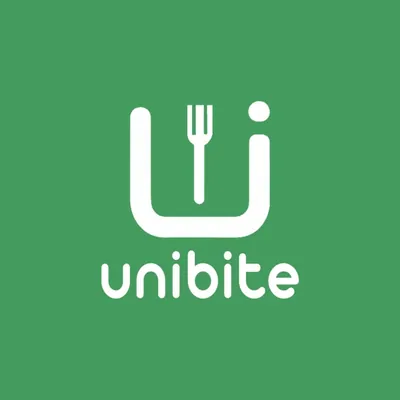
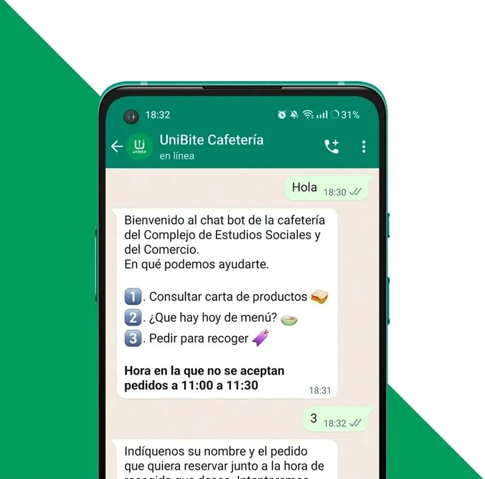
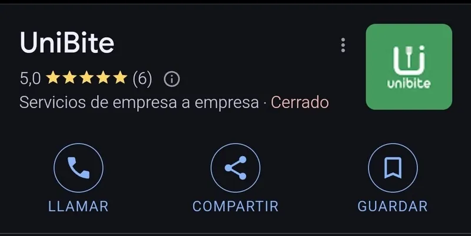

Todos los universitarios conocemos la misma escena: El momento de desconectar, tienes exactamente 30 minutos antes de regresar a clase, llegas a la cafetería y te topas con una cola infinita. Al final, te pasas el recreo entero esperando un bocadillo o, directamente, decides no comprar nada para no perder el tiempo.
El nacimiento de Unibite
A partir de esta situación tan cotidiana nació Unibite, una idea de negocio que desarrollamos mis compañeros y yo en la asignatura de Creación de Empresas. El concepto era sencillo: crear una plataforma donde los estudiantes pudieran consultar el menú y los precios y, lo más importante, pedir su comida con antelación para recogerla sin hacer fila.

Diseño del logo para el proyecto Unibite
La validación y el MVP
Para no basarnos solo en suposiciones, salimos a validar la idea. Encuestamos a bastantes estudiantes y hablamos con los trabajadores de varias cafeterías. Efectivamente, estábamos ante un problema real: los cuellos de botella en hora punta generaban frustración en los alumnos y hacían perder ventas a los locales.
Decidimos empezar de la forma más sencilla posible. Para la prueba piloto, montamos un producto mínimo viable muy básico: un bot de WhatsApp. Los alumnos le escribían para consultar la carta y hacer su pedido.

Interfaz automatizada a través de WhatsApp
Además, para darle aspecto de negocio real, diseñamos la identidad visual y abrimos un perfil en Google Business antes de probarlo en la cafetería de nuestra propia facultad.

Perfil de Google Business
El choque de realidad
Y aquí fue donde nos dimos de bruces con la realidad. Desarrollar la tecnología y montar el bot tuvo su dificultad, por supuesto, pero la verdadera barrera no estaba ahí. Lo realmente complicado fue cambiar la forma de trabajar de la cafetería.
De repente, el personal tenía que dejar de mirar solo a la barra para estar pendiente de un móvil por si llegaban pedidos digitales. Nos dimos cuenta de que la plataforma es un punto crítico, sí, pero entender cómo se integra en la rutina diaria de un trabajador con prisas es lo que marca la diferencia entre el éxito y el fracaso.
La gran lección: Convencer a los dueños de negocios tradicionales para que cambien sus dinámicas y compren un servicio que nunca han usado es todo un reto. La tecnología es solo una parte de la ecuación. Comercializar el servicio, vencer las resistencias internas y ganarte la confianza del cliente B2B es el verdadero desafío de cualquier idea de negocio.
Quién sabe, quizá en un futuro mis compañeros y yo retomemos Unibite para hacerlo realidad. Ahora sabemos que, además de pulir la tecnología, necesitaremos una estrategia mucho más fina para implementarla con éxito y llegar al cliente final.